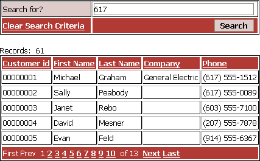
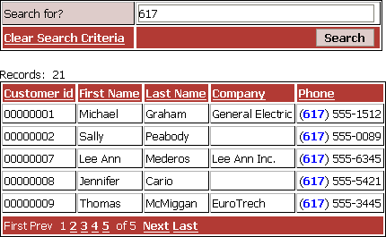

Highlighting Search Terms in Grid Records
This topic describes how to highlight a search term found in the text of matching records displayed in a grid. For example, if you start with something like this,

how do display something like this after the search runs?

This example is based on the customer table of the AlphaSports sample database.
Create a new read-only tabular grid based on the AlphaSports customer table.
On the initial Component Type page check Grid contains a 'search' part.
Display the Grid > Fields menu.
Place and format the Customer_ID, Firstname, Lastname, Company, and Phone fields on the grid.
Display the Grid > Properties menu.
Change the Layout Options > Rows of data property to 5.
Display the Search > Fields menu.
Place and format the Customer_ID, Firstname, Lastname, Company, and Phone fields on the grid.
Display the Search > Properties menu.
Change the Search Options > Show title property to FALSE (not checked).
Change the Search Options > Show single "Keyword" search field property to TRUE (checked).
Change the Sort Options > Include "Sorting" listbox property to FALSE (not checked).
Change the Records per Page Listbox Options > Include "Records per Page" listbox property to FALSE (not checked).
Save the component with the name "hst".
Create a new A5W page and save it with the name "hst".
Place the "hst" component on this page.
Click
 to display the page in Live Preview.
to display the page in Live Preview.View the page source in your browser. You should be able to find a section of code near the top of the page that looks like this. Note the <input> tag and its name property, which has the value "hst_s_Keyword".
<tr> <td class="ArizonaFieldCaptionTD" nowrap > Search for? </td> <td class="ArizonaDataTD" > <input class="ArizonaInput" maxlength="40" size="40" value="" name="hst_s_Keyword"> </td> </tr> |
Exit from the browser and reopen the hst.a5w page in the HTML Editor.
Display the Source tab of the editor.
Some place after the a5w_run_Component() function but before the beginning of the page's HTML add this Xbasic code.
<%a5 if (eval_valid("hst_s_Keyword")) then x_hst.Output.Body.Grid_HTML = stritran(x_hst.Output.Body.Grid_HTML, hst_s_Keyword, "<font color=blue><b>" + hst_s_Keyword + "</b></font>") end if %> |
This short script first tests to see if the hst_s_Keyword variable exists. If it does, it replaces each instance found in the grid's body section ( x_hst.Output.Body.Grid_HTML ) with markup that highlights the search term. In this case, the script replaces hst_s_Keyword with "<font color=blue><b>" + hst_s_Keyword + "</b></font>".
See Also